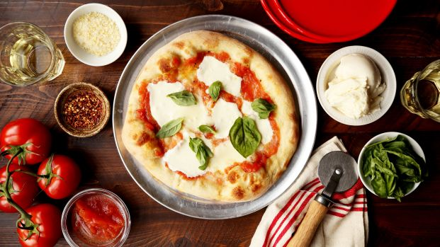
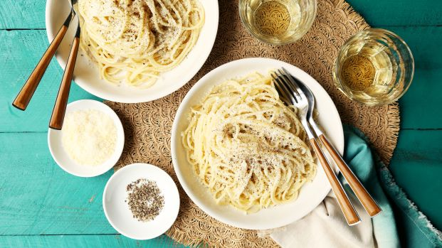
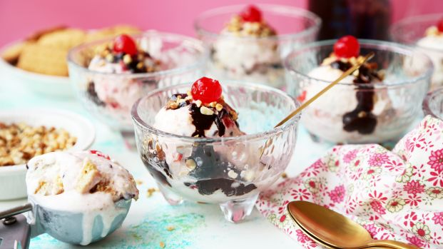

PIZZA MARGHERITA
Modeled after the Italian flag with its green basil, white cheese and red sauce, the pizza Margherita is a Neapolitan specialty, cooked in a scorching oven. This dough requires nearly no work, and the sauce is hardly more complicated than blanching some tomatoes.
CACIO E PEPE
Pasta bathed in creamy, buttery Parmigiano cheese and pepper? What's not to love? Make sure to reserve a bit of the pasta water that you can mix into the final product; this will give the sauce a smoother, more velvety texture.
TORTONI
This simple take on the Biscuit Tortoni features ready-made ice cream mixed with coconut macaroons, chocolate chips and cherries, topped with fudge sauce and nuts.